Este proyecto utiliza modelos de Machine Learning para predecir las ventas futuras basándose en datos históricos...
Aquí describirías los pasos, como la recolección de datos, el preprocesamiento, y el entrenamiento del modelo...
Aquí describirías los pasos, como la recolección de datos, el preprocesamiento, y el entrenamiento del modelo...
La mayoría de los consumidores tiene un satisfacción moderada (entre 2 y 3 puntos), hay menos consumidores que una satisfacción de 1 punto y incluso menos con una satisfacción de 4 o 5 puntos. Podemos decir que la mayoría de los consumidores tienen una satisfacción moderada.
La distribucion de la edad muestra que la mayoria de los consumidores se encuentran entre los 20 y los 50 años, teniendo mayor frecuencia entre los 24 y 25 años.
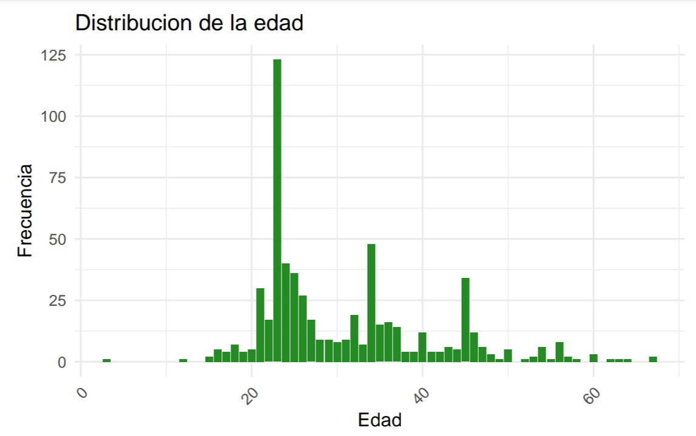
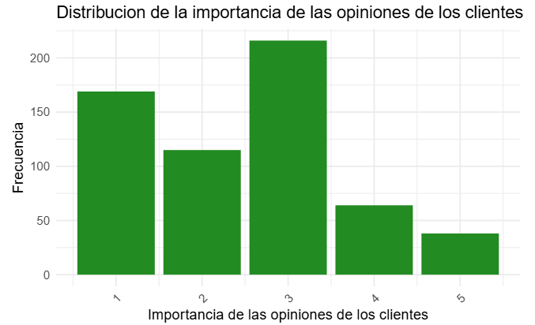
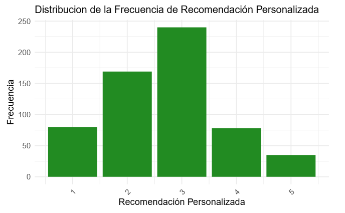
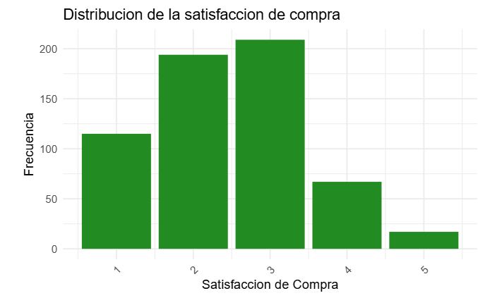
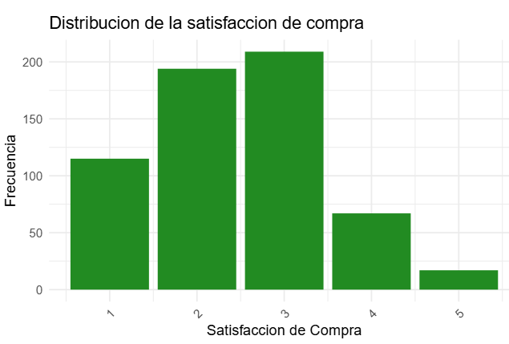
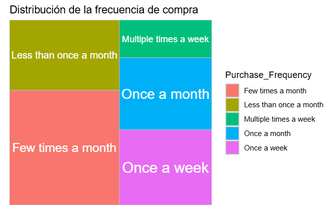
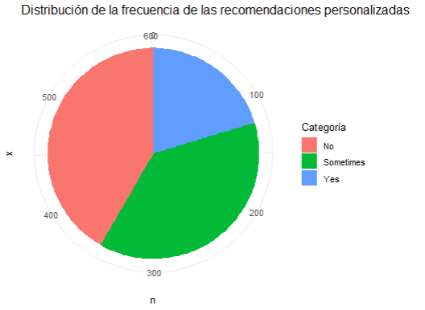
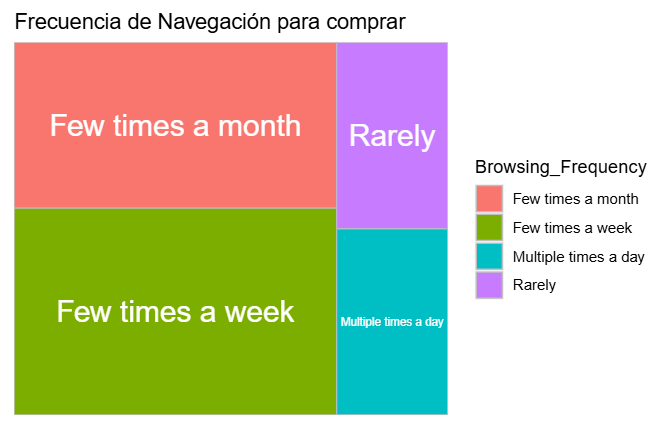
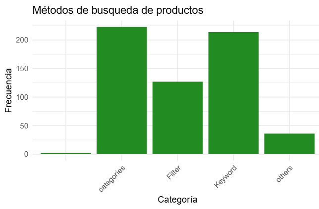
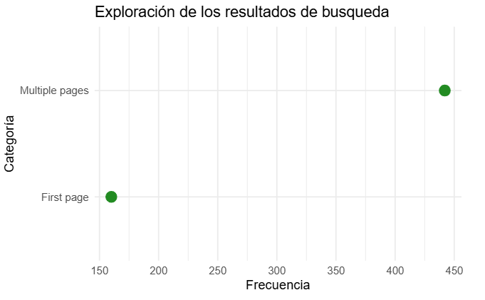
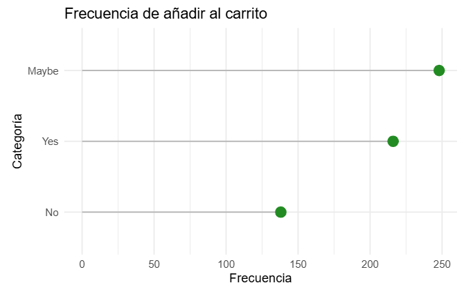
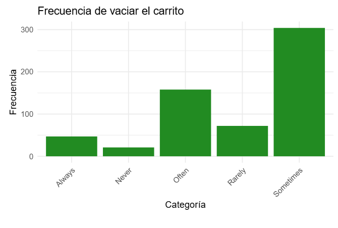
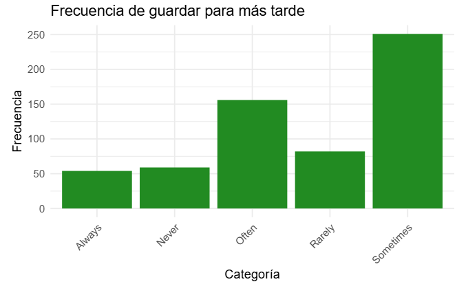
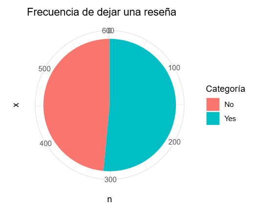
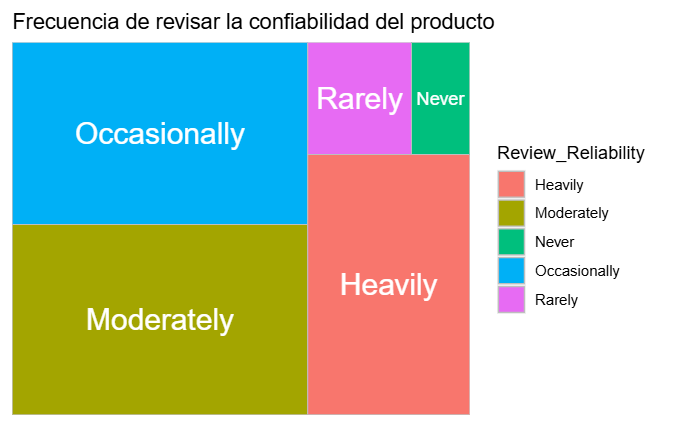
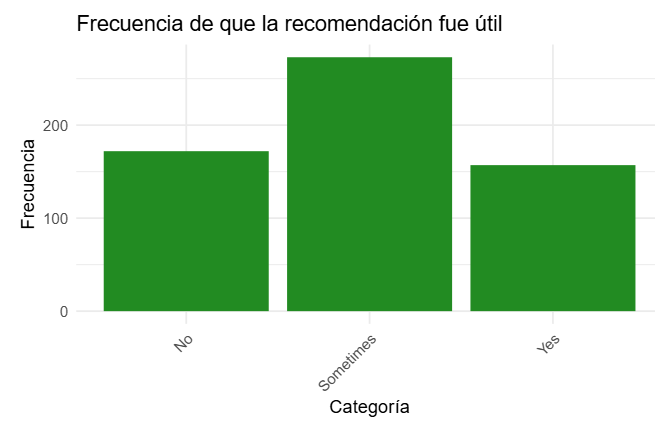
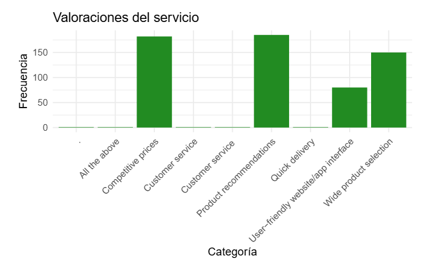
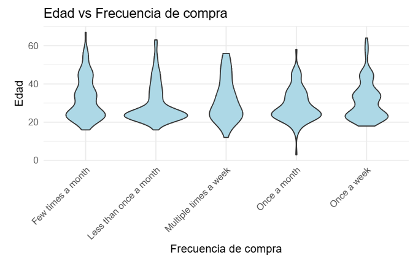
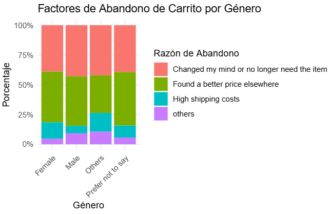
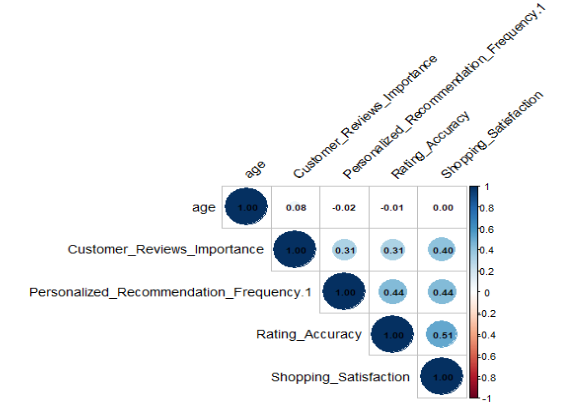
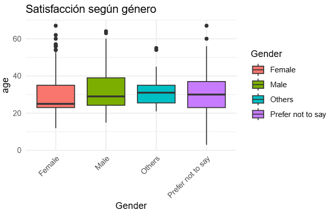
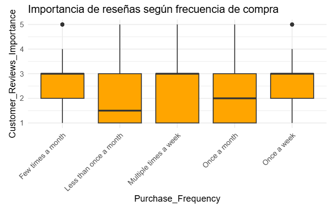
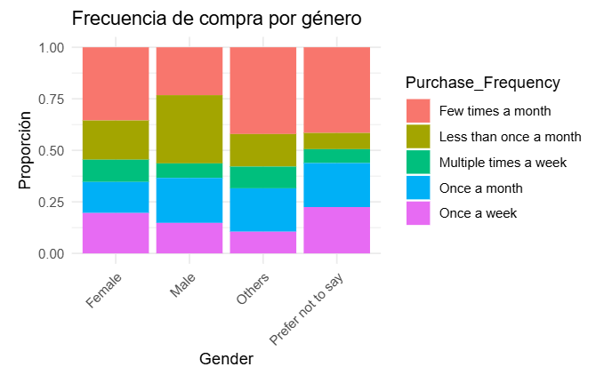
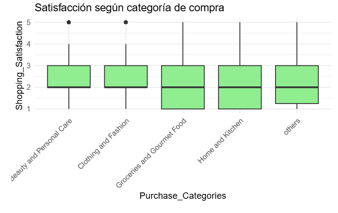
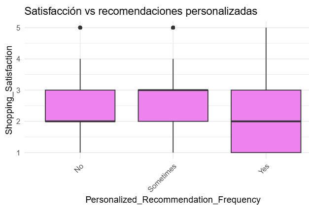
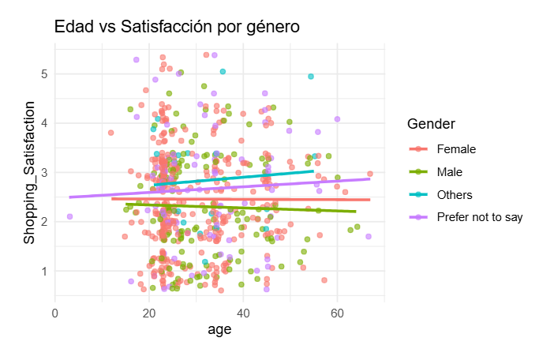
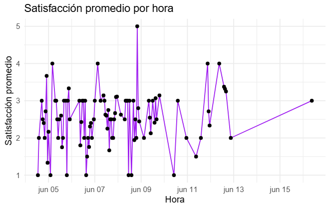
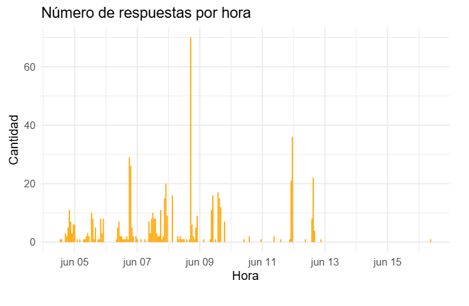
Vemos que la mayoría de los consumidores son mujeres, tenemos menor proporción de hombres y menor cantidad de personas que no se identifican ni como hombres ni como mujeres.
Lo más frecuente es que las personas compren algunas veces en el mes o una vez por mes, es menos común comprar varias veces por semana, aunque comprar una sola vez por semana tiene una frecuencia considerable.
En (?) vemos que lo más común es que No suceda o que suceda algunas veces, la frecuencia de que si ocurra es más baja que las dos anteriores.
En este caso vemos que lo más común es comprar "few times" veces en la semana, seguido por "few times" en el mes. Es menos común comprar comprar muchas veces al día o comprar de forma muy ocasional, lo que sería la categoría "Rarely".
La forma más común en la que los clientes buscan los productos para comprar es a través de categorías de búsqueda, seguido por palabras claves (keywords), otra formas de búsqueda menos comunes son filtros y otros formas no específicadas.
Es casi el triple de frecuente para los consumidores recorrer muchas páginas antes de comprar, en comparación con recorrer solo una.
La frecuencia más común es Maybe, seguido por Yes que es menor frecuente y por ultimo el menos frecuente el No
En ... Lo más común es hacerlo a veces (que sería sometimes), o a menudo. En general es común hacerlo algunas veces, pero categorías como nunca o siempre son menos frecuentes.
En cuanto a ... Tenemos un comportamiento similar al gráfico anterior, dónde lo más comunes es hacerlo algunas veces y lo menos común es hacerlo siempre o no hacerlo nunca.
Lo más frecuente es si hacerlo, aunque no hacerlo tiene una frecuencia menor pero muy cercana a si hacerlo.
En ... lo más frecuente es hacerlo de forma seguida, moderada o ocasional. Es muy poca frecuente hacerlo raramente o no hacerlo.
En ... lo más frecuente es hacerlo a veces, siendo menos común el si y el no.
Lo mas valorado de Amazon por los consumidores son los precios competitivos, las recomendaciones de productos, que la interfaz de la web sea amigable con los usuarios, y que haya una amplia selección de productos.
En cuanto a la frecuencia de compra tenemos que las personas que más compran tanto en semana como en mes tienden a tener en promedio entre 30 y 40 años. En cambio, las personas que compran menos tanto en semana como en mes tienden a tener en promedio entre 20 y 30 años.
En cuanto a los factores de abandono más comunes por género tenemos que tanto para hombres como para mujeres hay un comportamiento similar, dónde lo dos motivos más comunes son abandonar la compra porque cambiaron su opinión sobre que necesitaban el producto, o encontraron un precio mejor.
En cuanto a la matriz de correlación, los colores más rojos indican una correlación positiva más fuerte, los colores más claros indican una correlación negativa más fuerte. En general no parece haber correlaciones muy fuertes entre las variables cuantitativas.
Las mujeres están en promedio menos satisfechas que los hombres con el servicio de compra de Amazon. Las personas que no se identifican ni como hombres ni como mujer están en promedio más satisfechas que los hombres y las mujeres pero hay que considerar que tenemos menos datos de esta última categoría, por lo que está podría ser una conclusión sesgada.
No hay un patrón muy claro, si bien las personas que los haces menos de (Falta)
En las el comportamiento más frecuente de compra es pocas veces en el mes, otros comportamientos como menos de una vez al mes, múltiples veces a la semana, una vez al mes y una vez a la semana son menos comunes. En hombres el comportamiento más común es Less than once a month, mientras que los otros comportamientos mencionados son menos frecuentes. Las personas que no se identifican como hombres ni como mujeres tienen un compromiso similar al de las mujeres.
En cuanto a la satisfacción según el tipo de producto comprado (belleza y cuidado personal, ropa y belleza, comida, productos del hogar y cocina, otros) , todos los productos parecen compartir el mismo tipo de satisfacción
El nivel de satisfacción es en promedio más alto para los usuarios que tienen recomendaciones personalizadas algunas veces, sin embargo para los que no lo tienen o lo tienen siempre, el nivel de satisfacción promedio es el mismo y es más bajo que para los que lo tiene algunas veces.
Si vemos líneas que cruzen la edad, la satisfacción de compra y el genero, vemos que los hombres conforme aumenta la edad tienden a disminuir su satisfacción, el mismo comportamiento se da para las mujeres pero con una menor pendiente, en cambio para las personas que no se identifican ni como hombres ni como mujeres, al aumentar la edad, aumenta la satisfacción. Luego los puntos representan a los individuos donde los colores son sus géneros (colores) y ubicados en ciertos grupos de edad en el eje X, y los niveles de satisfacción para cada individuo.